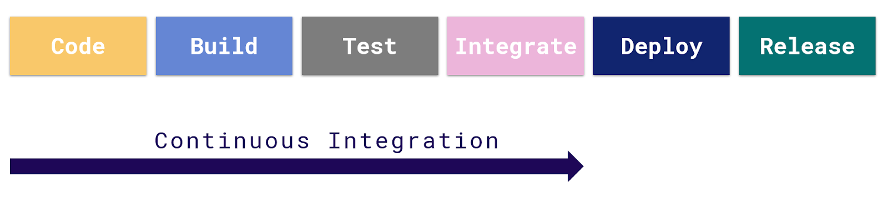

You achieve Continuous Integration when you integrate in an automatic way the tasks of coding, build and test in your process.  Continuous integration should ensure that if a developer writes code, that code is tested and works first individually and then integrated into the entire system, and also ensure that the code that was written will not break anything in the system. The idea of Continuous Integration is that the work is integrated frequently, so as to avoid conflicts as far as possible and if they appear, they are small and easy to fix. All this must be done automatically. Therefore, Continuous Integration is a very important point in the DevOps process. In order to integrate your development, you have GeneXus Server, which together with the MSBuild Tasks allows you to automate all the steps related to the Continuous Integration of the application. For each task that you can execute from GeneXus you have an MSBuild task that allows you to do the same but automatically. For example, when a developer makes a change to an object and commits that change to GeneXus Server, you can have automated tasks that update that object to the production Knowledge Base, perform the build, run the tests defined in the Knowledge Base, perform the deploy of the package (war) and leave it available on the server soon to be executed. In each step of the process, you have to include tests, whether they are Unit Test objects, integration tests, etc. For this you have several tasks that you must automate: code integration, build execution and execution of unit tests. See also
|